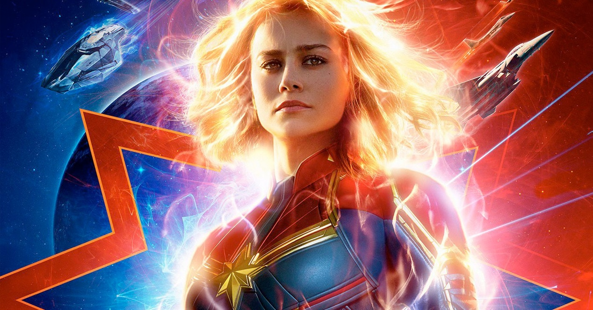
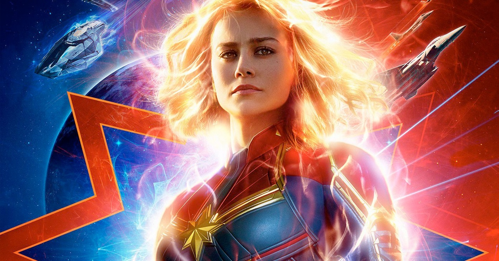
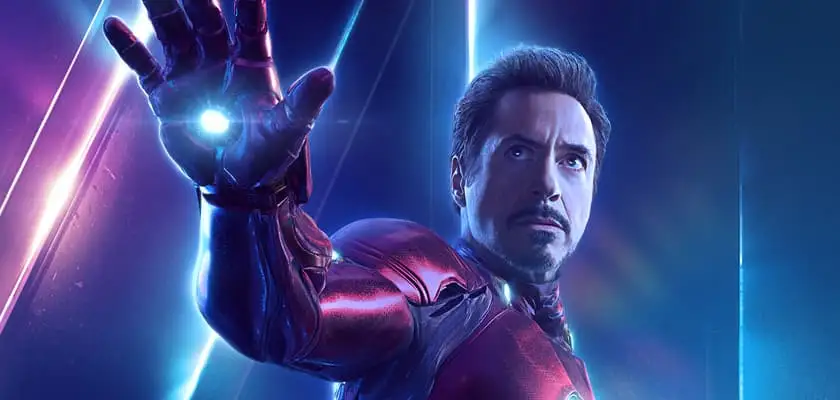
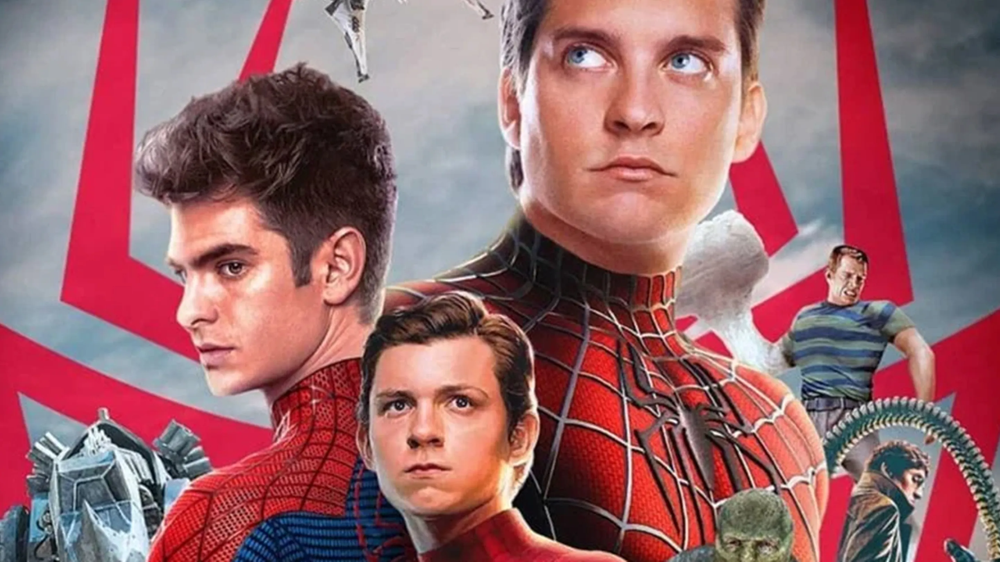
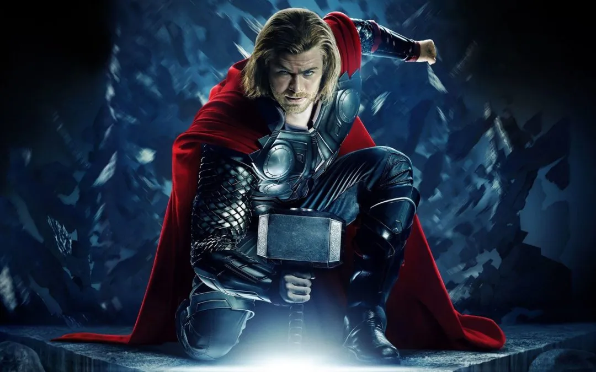
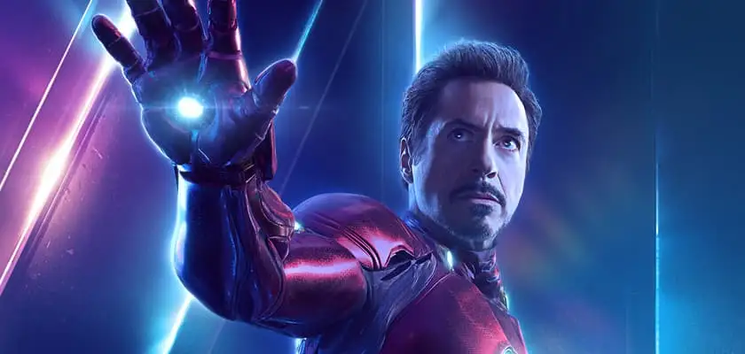
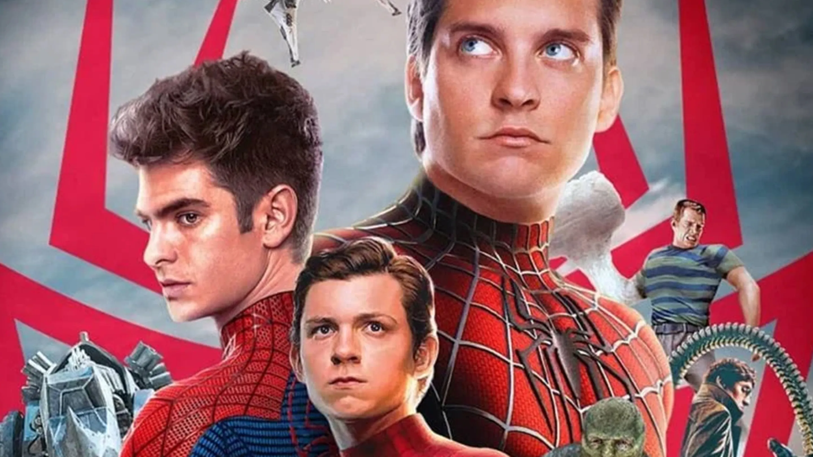
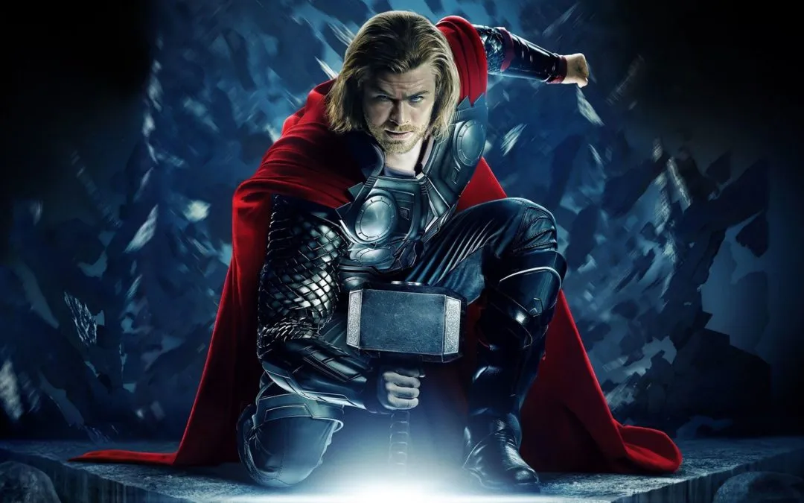

 





Un poco sobre Marvel
Marvel Studios nació en 1996. Anteriormente era conocida como Marvel Films (1993-1996). Hoy día es una
productora subsidiaria de Walt Disney Studios, que a su vez forma parte de todo el conglomerado The Walt
Disney Company. Uno de los nombres propios más importantes de la empresa es Kevin Feige.
Marvel ha estado ligada a tres franquicias: 'X-Men', 'Spider-Man' y el 'Universo Cinematográfico Marvel
(UCM), siendo este último el producto principal de su producción. Spider-Man, por su parte, se encuentra
acreditada a Sony Pictures; Los X-Men respondía ante Fox hasta diciembre de 2017, pero con la compra de
Disney toda película posterior a 'X-Men: Fénix Oscura' (2019) se unirá al UCM. Como nota anecdótica, 'El
increíble Hulk' (2008) pertenece a Universal, que tiene los derechos de cualquier futura película del
superhéroe verde.
Como se comentó previamente, el producto estrella es, sin duda, el Universo cinematográfico de Marvel. Con
el lanzamiento de 'Iron Man' en 2008, si inició todo un fenómeno popular que desembocaría en un proyecto de
20 películas (más cuatro aún por estrenar) de los superhéroes más populares de los cómics de Marvel
Entertainment. Esta saga ha generado un total de 17 mil millones de dólares de beneficios, convirtiéndose
con diferencia en la franquicia más lucrativa de la historia del cine.
Un poco de historia
Al comienzo, Marvel Entertainment tenía muchos problemas a la hora de llevar a sus héroes a la pantalla
grande. Miraban a su alrededor y su principal contrincante, DC, estaba consiguiendo situar 'Batman' y
'Superman' como bombazos de taquilla muy importantes, y ellos no conseguían dar con la tecla para que sus
películas llegasen a buen puerto. Se optó por varias soluciones: películas de personajes menos conocidos
como 'Howard... un nuevo héroe', que fueron un estrepitoso fracaso o estrenos directos al vídeo.
Todo empezó a cambiar con el paso de los años. Marvel Films, bautizada así tras la compra el contrato entre
la juguetera ToyBiz y Marvel Entertainment, fue un paso en la dirección adecuada, pero solo se focalizaron
en series para televisión, distanciándose del mercado del cine. En 1997, tras una fuerte reestructuración
financiera, se dibujaron varios proyectos en el horizonte, siendo la primera película oficial de Marvel
Studios 'Blade' (1998), la historia del cazador de vampiros homónimo protagonizado por Wesley Snipes.
En los años siguientes comenzó su ascenso. En el 2000 se lanzó 'X-Men', de Bryan Singer, que junto con el
'Spider-Man' de Sam Raimi (2002) sirvió para confirmar que los cómics podían servir para generar historias
que captasen al gran público. En los años siguientes llegarían 'Daredevil' (2003), 'Elektra' (2005) y 'Los 4
fantásticos' (2005), así como las secuelas de los mutantes y del héroe arácnido. En marzo de 2007, David
Maisel pasó a ser presidente y Kevin Feige obtuvo el cargo de presidente de producción, justo cuando 'Iron
Man' comenzó a filmarse.
La billetera de Disney
Los años grandes de Marvel Studios llegaron tras el lanzamiento de 'Iron Man' y la compra de Disney de todo
Marvel Entertainment por valor de 4 mil millones de dólares en 2009. Poco a poco, la fusión iría
completándose y la empresa del ratón Mickey tendría el control completo. En 2015 consiguieron llegar a un
acuerdo con Sony para llevar a cabo dos años más tarde 'Spider-Man: Homecoming' y en el mismo 2015 se
produjo la escisión de Marvel Studios del resto de Marvel para informar directamente a Disney. Además, en
2018 se confirmó que desarrollarían proyectos propios para Disney+, la futura plataforma de streaming de los
de Bob Iger.
Como nota interesante, Stan Lee, el escritor de los cómics sobre los que se basan las películas fue
ejecutivo de
la empresa hasta su fallecimiento en 2018. Actualmente es uno de los estudios más lucrativos de todo
Hollywood,
siendo de los pocos que consiguen situar en estos tiempos sus películas como los eventos cinematográficos
más
populares del año. La Academia, eso sí, aún no ha premiado ninguna película de Marvel, aunque sí es cierto
que
parece ser una tendencia que está remitiendo si se observan las recientes nominaciones de los Oscar de 2018,
donde 'Vengadores: Endgame' y 'Black Panther' han conseguido juntas 8 nominaciones, incluyendo Mejor
película
para la entrega de RyanCoogler.
DreamWorks Animation ha dado lugar a sagas de animación tan conocidas como 'Shrek', 'Madagascar', 'Kung Fu
Panda' o 'Cómoentrenar a tu dragón'. Tanto la primera entrega de 'Shrek' como 'Wallace y Gromit. La
maldición de
las verduras' han sido galardonadas con el Oscar a Mejor película de animación de la Academia. Mientras que
las
dos primeras entregas de 'Cómo entrenar a tu dragón' optaron a la estatuilla en 2010 y 2014,
respectivamente.
El niño pescando en la luna
El logo o iden de DreamWorks, la pequeña animación de un niño pescando sentado en una media luna, se ha
convertido en una de las imágenes más representativas del cine de animación. La idea general detrás de la
imagen surgió de la creativa imaginación de uno de sus co-fundadores, el cineasta Steven Spielberg. La
imagen del chico sentado en una luna, en su fase de cuarto creciente, un concepto puramente surrealista y
onírico, trataba de representar la creatividad e imaginación de la productora. Spielberg quería que la
imagen fuera creada por ordenador en su totalidad, como representación de la identidad del estudio, que
siempre tuvo la vista puesta en la animación.
El dibujante y diseñador Robert Hunt fue encomendado con la misión de dar forma a la idea de Spielberg y el
cineasta acudió a su buen amigo George Lucas para la animación de la idea, que animó el grafismo en su
empresa de animación: Industrial Light & Magic, la empresa de efectos especiales dirigida por Lucas
responsable del CGI y VFX de películas como: 'Star Wars', 'Poltergeist', 'Regresoal Futuro' o '¿Quién engañó
a Roger Rabbit?'. Para componer la música que acompaña a la imagen, Spielberg pidió ayuda a uno de sus
colaboradores habituales, el compositor John Williams, el hombre responsable de la bandas sonoras de títulos
tan icónicos como 'Star Wars', 'Harry Potter', 'Parque Jurásico', 'Tiburón' o 'Superman'.